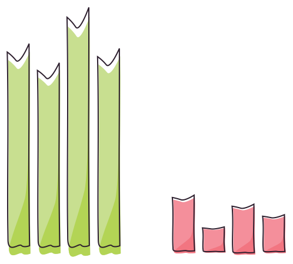

Monitoring Reactive Apps
with Kamon
Presented by Ivan Topolnjak / @ivantopo
The Kamon Project
Motivations
- Traditional monitoring tools don't play well
with the reactive model. - No open source options for monitoring
reactive applications. - Only one commercial offering for monitoring
reactive applications.
We wanted to help people succeed when building reactive applications
and production monitoring is a top priority for real success.
Why production monitoring?

There is a gap between your mental model, your development environment and your production environment.
Suggested material: "Metrics, Metrics Everywhere"
by Coda Hale.
How to do it right?
-
Start with high level metrics, like user experienced response time.
- How long does a login take?
- How long is the user waiting for search results?
-
Go a bit deeper and analyze sections of functionality within your app.
- How long is the external Http authentication service taking?
- How long did the "select all products" JDBC call take?
-
Go even deeper and analyze the core components of your app.
- How many messages is handling this actor?
- How big is its mailbox?
- How many active threads do we have in this dispatcher?
The Traditional Model

There is a dedicated thread per request. When you ask for a external resource your thread is there, doing nothing, awaiting for the resource it needs to continue processing.
The Enhanced Traditional Model

Some pieces of bussiness logic might be submitted to worker threads, but still there is a dedicated thread waiting for the results.
The Reactive Model

All processing stages happen asynchronously, as a reaction to the previous stage completion. When a thread is not being used then the thread is free to collaborate in other parts of the application.
Tool Mapping
Traditional Model: ThreadLocal
Enhanced Traditional Model:
ThreadLocal + Utils
Reactive Model: ???
Enter the TraceContext
- It's attached to events while they flow in the system.
- Has a name.
- Has a token.
- Can contain segments.
TraceContext propagation: Actors
-
The TraceContext available when sending a message is also available when (and only when) processing that message in the target actor.
actorRef ! "some message" actorRef ? "some question" pipe(someFuture) to actorRef -
When a actor fails and the supervision mechanism kicks in, the related system messages carry the TraceContext too.
def receive = { case "fail" => 1/0 }
TraceContext propagation: Futures
-
The TraceContext available when creating a future is also available when the future's body is executing.
val lottoNumber = Future { expensivePredictiveAnalysis() } -
The TraceContext available when creating a future is also available when executing any callbacks on the future.
lottoNumber.map(verifyAuthenticity).map(sendToMe)
Simple TraceContext API
-
Wrap the code where your business transaction starts like this:.
TraceRecorder.withNewTraceContext("load-user-data") { userService ! UserService.Find(username) } -
Identify where your business transaction ends and finish the trace.
TraceRecorder.finish()
Reactive Model: TraceContext

Let's measure!
What is important for you?
- Mean.
- Median.
- Maximun.
- Standard Deviation.
-
Percentiles.
- 75 %
- 90 %
- 95 %
- 99 %
- 99.99 %
The answer is simple:
We don't know!
We will keep all the data and let you decide.
The challenge
- Store millions of measurements per second.
- Have a limited and predictable memory footprint.
- Very low overhead for recording measurements.
Is it even possible?
Yes! Thanks to the HDR Histogram
HDR Histogram Layout

Let's go deeper with segments
Trace Segments